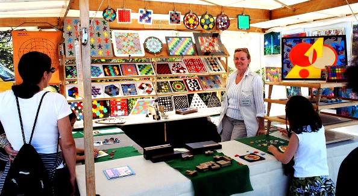
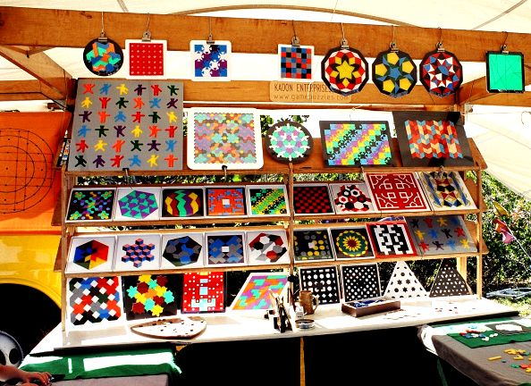
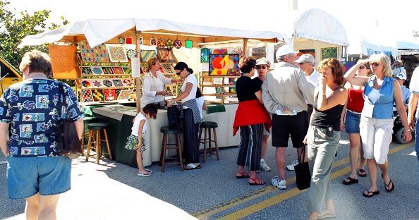
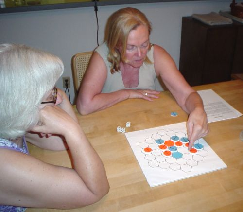

|
Visits from Kate Jones
Kate drove the Kadon booth from her winter home outside Miami to the art show in Stuart, Florida. That show took place on February 26 and 27, 2005. She spent every day at the show and then slept over at our condo in Jupiter. She also spent half the nights talking with Ann and me, and we were worn out just seeing how hard she works. Two weekends later she repeated that schedule for the art show on Highway A1A in Jupiter. That show, by the way, is in a beautiful setting overlooking the ocean.
The following are pictures from the Jupiter show. And here is a schedule of the shows where she will appear in the future.
|



March 11, 2006: Kate came for this year’s Jupiter art show and again stayed over at our condo. Here she is playing a game I wanted to submit to Kadon. The game was invented by my friend Don O’Brien, and Kadon might publish it in the future. |
 |